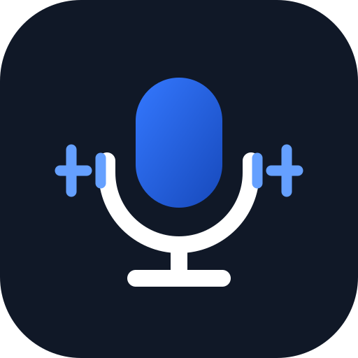

RecVoiceNow
Step 1 of 4 · Choose
🔒 Private · stored on this device only
1
Capture what matters.
Record a voice memo or try screen capture where your browser supports it. Everything stays in this browser on this device — no account, no upload.
My Recordings
No recordings yet. Your saved recordings will appear here.